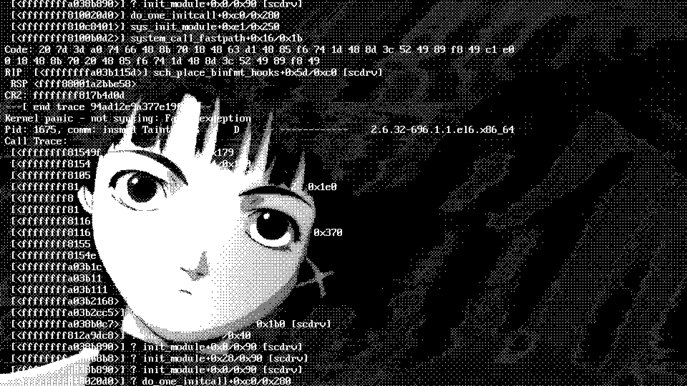
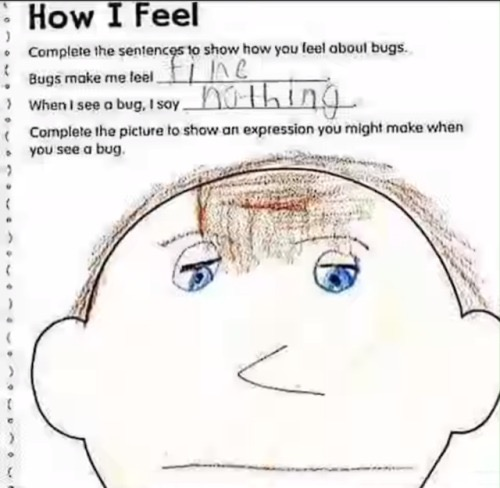
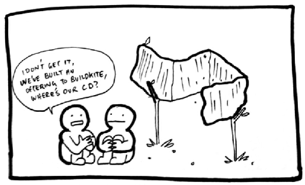

This is Keno's
meme, and I have unabashedly stolen it.

Julia has a feature where you can report bugs and crashes from the
command line. You just run your program with
julia --bug-report=rr, and it sends a crash report plus an
rr trace of the process to our servers for us to take a
look at.
This is Keno's
meme, and I have unabashedly stolen it.
Sometimes we get some crazy stuff. This is in fact not the first time
that someone from the Julia team has found something crazy in a crash
dump. Keno Fischer wrote a similar (and substantially more detailed)
article here,
where he used rr to debug a process where the issue turned
out to be faulty memory.
Where Keno visually detailed how he found the bug, I'm just going to rant from memory. I should have kept better records. Oh well. Live and learn.
Julia is a garbage collected language, writen mostly written in itself, but partially in C and C++. The bug manifested as a random crash in function dispatch inside the interpreter, which is also written in Julia. The function dispatch code is well tested. When the interpreter crashes, it's generally the case that there was already memory corruption.
We contacted the user, and we asked them for the source code of the program that produced the crash and all the data they used to run it. Graciously, they were able to provide it.
s/println!/printf is glorious.
Usually, my preferred method of debugging is printf()
debugging. It's great. It's simple. It catches most things. However, not
this time. This crash was random, and hard to reproduce. I tried to
reproduce it, but I couldn't. That doesn't mean there's no bug, it just
means it's hard. So, I am forced to take the "midwit" approach and try
to figure it out using the rr trace.
Memory corruption bugs generally suck to find. When you're writing C,
you can usually just compile with -fsanitize=address.
Address Sanitizer will tell you when you overwrite memory that shouldn't
be impossible to assign to within the usual confines of C or C++.
Unfortunately, the Julia runtime doesn't support being compiled with
asan because it depends on third party binaries that were not
compiled with asan. This means that when our binary reaches into memory
allocated for variables in those libraries, asan will throw a false
positive and crash. When one part of the process is compiled with asan,
it all must be.
Without asan as a crutch, I decided to do as my forebears did and guess.
I loaded up rr, typed bt full, and... even
after a while of gawking at it, this stack trace doesn't make any sense.
The stack trace very clearly doesn't follow the control flow of the
source code. Why? How is that possible?
Dispatch in Julia is dynamic. From where the crash happened, my initial guess was that either a C function pointer or Julia object was written on top of another. But... how? And where?
Reading through the backtrace, I found that the process crashed after
a jl_call() to abstract_invoke(). That rules
out that a C function pointer is the culprit. We're looking for a Julia
object written on top of another.
I was still new to the Julia codebase at this point, so for a day or two I was stuck. I spent half an hour reading different parts of the runtime that the process was touching. Nothing seemed to pop out at me.
New idea. I try to replicate the bug through brute force. I sshed 4
different servers, downloaded the files, and ran the program 40 times at
once with rr, on each machine. Eventually a few of them
crashed. Some crashed in the same way. Others crashed in different ways.
The crash almost always happened in a different place. Sometimes there
was a nonsense backtrace, and sometimes there wasn't. Sometime it
crashed in Julia code, and sometimes in C code. Often it crashed in
external libraries. The bug was rare, I would get a new trace to look
through every 10 minutes or so.
Brute forcing it didn't give me the answer, but it did give me information.
Eventually, I got an rr trace that seemed useful. This
led me to start reading the Julia garbage collector, and at last the
answer seemed obvious.

The face
I made when I had the epiphany
When Julia objects are allocated, they are never relocated. They stay there forever, until they are garbage collected or the process exits. Therefore, it is actualy impossible that an object was written on top of another... unless it happened in the garbage collector's allocator.
So, I set a breakpoint on jl_gc_alloc(), and
jl_gc_sweep() and watched the pointers that came out of the
allocator. Sure enough, jl_gc_alloc() returned the same
pointer twice before jl_gc_sweep(). That is not supposed to
happen. The question remains, why is it happening?
When I descended deeper, I found that jl_gc_alloc() just
calls malloc(), offsets the resulting pointer, and does a
bunch of bookkeeping to register the new object with the Julia runtime.
So, it was actually malloc() that returned the same thing
twice.
... Excuse me, what? This program is single threaded!
Deliver me from this hell.
I time travelled back and set a breakpoint on free().
Nope. It isn't freed. Libc just straight up returned the same pointer
twice. What? How does that happen?
Collecting myself, I noted that there was an extra call to
malloc() between the two calls to
jl_gc_alloc(). What is that?
When I time travelled to the next call and typed bt once
more into rr, I saw that the call to malloc()
happened on a signal stack inside a call to dlopen().
Suddenly, I knew exactly what the bug was and where.

In this moment, I
felt nothing. I was numb.
1. Dynamic linkers work by "lazy binding", replacing calls to external libraries
with trampolines that load the library if its symbol cannot be found in the
Global Offset Table (GOT). This library loading and stashing the symbol and
offset in the GOT is roughly equivalent to a call to `dlopen()` and `dlsym()`.
2. `dlopen()` allocates memory for the library it loads using `malloc()`.
3. `dlsym()` does not allocate memory, it only returns a pointer inside the memory
allocated by `dlopen()`.
4. `malloc()` is not listed in `man signal-safety` as being `AS-Safe`.
5. Signal handlers interrupt the current thread herever it is, whenever it wants.Most C programmers understand that the linker can do dynamic linking for you. Fewer understand lazy binding, and fewer have delved further into the C or ELF standards for the other information.
It is unsafe to call even AS-Safe functions from a signal handler, if the libraries they're from have not been loaded yet. If a library is dynamically loaded inside a signal handler, it may corrupt the allocator, which may crash the program. Or worse, like in this case, it might not.
Signal safety is a difficult topic for people wrap their heads
around. man signal-safety is present, but doesn't do the
topic justice.
The short version of the signal safety rant is that if a function is
not on the list of allowed functions from
man signal-safety, do not call it from a signal handler.
Even if you did not type the call yourself. If you do call something
that calls something not from that list, then understand it is undefined
behavior and that you are doing so at your own peril. It is also against
the rules to modify any shared global state, or risk the same sort of
corruption.
This explanation is sufficient to avoid all issues with signal handlers, but is too restrictive, and so it is ignored. We want to be able to do interesting things in signal handlers, that's why they're there. So, in practice, we still have to understand the rules.
To understand why malloc() is not signal safe, for
simplicity's sake suppose that it's implemented something like this:
void* freelist[FREELIST_SIZE];
size_t freelist_size = 0;
void free(void* p) {
freelist[freelist_size++] = p;
}
void* malloc(size_t n) {
void* ret = freelist[freelist_size - 1];
/* THREAD PAUSED HERE FOR SIGNAL HANDLER */
--freelist_size;
return ret;
}In that circumstance, when the return value is decided and the thread
is paused before the bookkeeping completes, you can see how
malloc() would return the same thing twice. The same thing
happens inside glibc. It grabs a pointer from the freelist, but doesn't
completely erase the record of it in the same instruction. This can also
lead to the allocator getting corrupted.
Four things make this bug particularly insidious.
First, the bug is not even in the code the programmer wrote. It's in code that the linker injected, in a completely different section of the project from where the crash happens.
Specifically, the crash happened inside of function dispatch inside of LLVM ORC JIT while compiling code that the runtime had not seen before. This was a massive red herring. LLVM had nothing to do with the bug, it was just the first thing that requested memory after the allocator was corrupted. Function dispatch is massively complicated, LLVM's JIT compiler is even more complicated, and none of them were the source of the issue.
Second, the code looks totally reasonable. People don't know they are
doing something unsafe by calling ostensibly signal-safe code from a
signal handler. The linker inserts a call to dlopen(), and
that's what calls malloc(). Two hidden layers. Even if you
know about one of those, you may not know about the other.
Third, Julia is a ridiculously large project. Working on Julia was
the first time that I touched a codebase too large for any one person to
understand, and it changes too fast to keep up with. It's enormously
challenging to maintain a mental model of the entire project, and even
more challenging to know where to look for a bug when you don't even
have a mental model. So we are forced to rely on bug reports and tools
like rr to help us.

Buildkite and other CI/CD
tools are great, but not a substitute for understanding the code.
Fourth, the bug is not reproducible. It only happens when the
backtrace signal handler is called during a call to
malloc(). That can happen basically anywhere. In the
original trace provided in the bug report, malloc() did not
crash immediately, it just returned the same pointer twice. That
allocator's bookkeeping was overwritten, but that wasn't the cause of
the crash either.
The crash actually happened when the Julia object that was allocated was used. Since the same pointer was returned twice, there were two objects that were supposed to be distinct but had the same address. By coincidence, they were both allocated in the same place, and so they had the same type but were supposed to hold different data, which eventually led to the wrong function being called, a nonsense stack trace, and eventually a crash in function dispatch.
I should also note that without making the use of multiple high end servers with 40 threads and what I assume must be an ungodly amount of RAM, this bug would have been impossible to reproduce. I had to run the program millions of times before I could get a single crash, and many more times before I got a useful one.
Finally, it is time to squish the bug.
The fix for this bug is simple. We just need to make sure that the
libraries and symbols are loaded, so that the call to
malloc() injected by the linker can never be executed. We
can, on the main thread before we install the signal handler, call
dlopen() on the library so the symbols are in the Global
Offset Table, or just call a function from the library we want to load
as a no-op.
Honestly, I have no conclusions. I'd never seen a bug like this before, I've not seen any since, and I hope I never see a similar bug ever again.
I knew that something like this was possible, but it's the bug hunting equivalent of a Lovecraftian horror rising from the depths, only to be beaten back by a coallition of sleep paralysis demons and Mr. Ouch from those warning signs on pad-mounted transformers. It's not something you expect to see in real life.

Mr Ouch
scared me as a kid, but now I just think he's pretty neat.
I want to stop thinking about it, but I can't. It's too interesting not to share. I have to write about it. Now that I'm no longer working on Julia full time and the blog post is written, hopefully we can put this bug to rest.